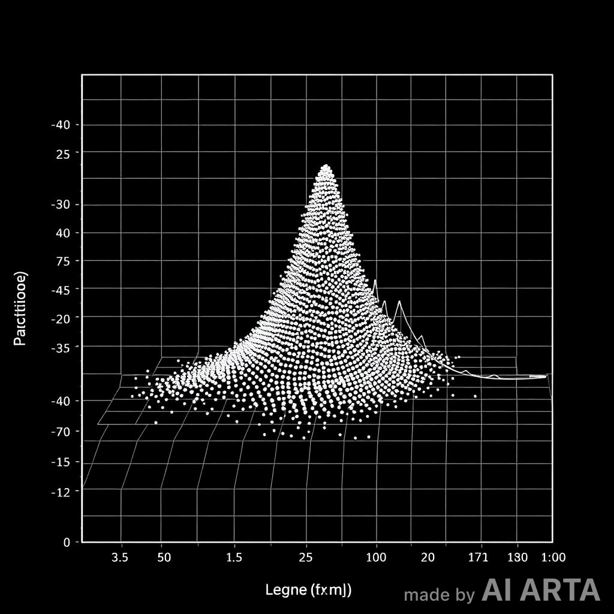
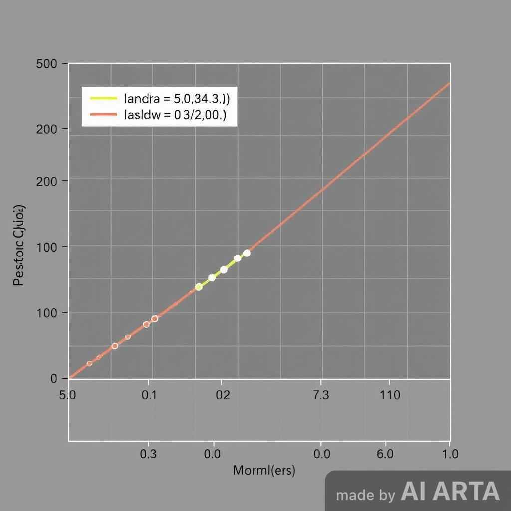
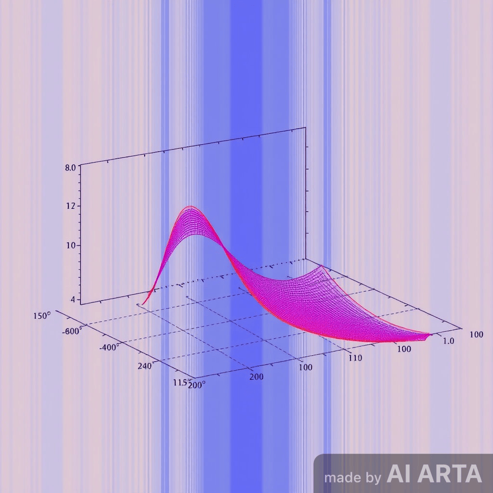

Notebook 03 — Particle Formation¶
Overview¶
This notebook explores the emergence of stable particles from localized compression and phase-locking of the distributed wavefields:
- The graviton (gravity/compression field)
- The chronon (time-bonding field)
- The cognon (data/occupancy field)
Particle formation is treated as a thresholded condensation process, triggered when local wave density and compression exceed a critical limit.
1. Localized Collapse and Birth Condition¶
We start from the core particle creation criterion:
In continuous form, the birth rate is expressed as:
where H(\cdot) is the Heaviside (or smoothed logistic) step function.
2. Physical Interpretation¶
| Symbol | Meaning | Role |
|---|---|---|
| \rho | Local wave density | Determines collapse threshold |
| \lambda_c | Compressive strength | Controls graviton coupling |
| \alpha | Creation rate constant | Governs nucleation rate |
| n | Nonlinearity exponent | Tuning for sharpness of transition |
| \Phi | Compression potential | Draws density inward |
When compression and density reinforce, wave amplitude focuses, eventually forming a stable “particle kernel.”
3. Model Code (Prototype)¶



⸻
- Evolution Picture
Stages of Formation: 1. Wave propagation — freely evolving distributed ψ-field. 2. Local focusing — compression builds around density maxima. 3. Threshold crossing — nonlinear feedback creates nucleation event. 4. Stabilization — feedback between ψ, Φ, and χ locks particle. 5. Particle existence — discrete energy identity forms, coupled to chronon and cognon fields.
⸻
- Discussion
Particle formation is not a single-field phenomenon — it is a triadic stabilization among: • ψ (information/wave amplitude), • Φ (compressive potential / graviton field), • χ (temporal coherence / chronon field).
This forms the minimum trinity of physical presence:
Space (Φ) × Time (χ) × Information (ψ) → Existence